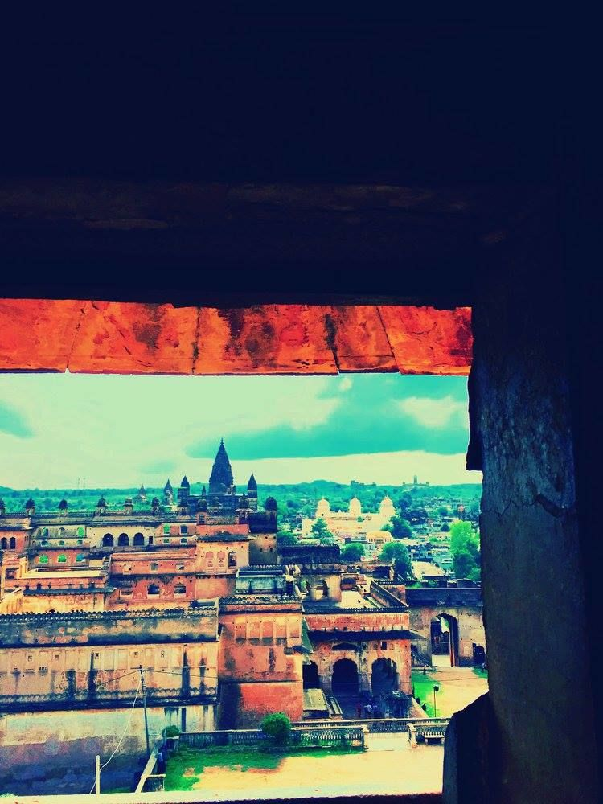
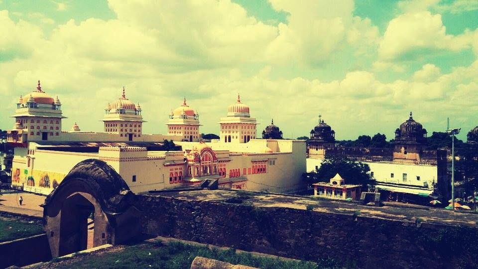
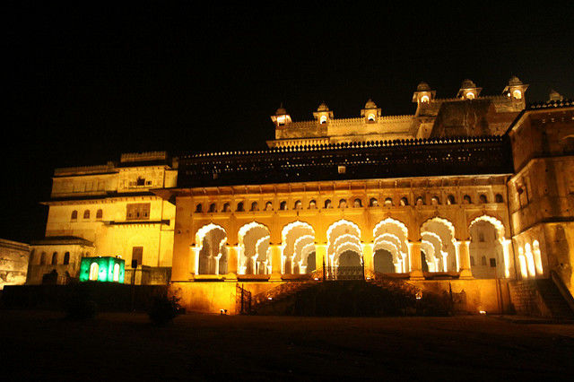

Jhansi - The City of Rani LaxmiBai
Bundelkhand
The hilly region is now divided between the states of Uttar Pradesh and Madhya Pradesh, famous for 2 women and both were the warrior...Orchha is far from the city and surrounded with greenery and Betwa River which give you refreshing atmosphere

A great history attaches to this temple that King of Orchha devotee to Lord Krishna But Queen devotee to Lord Ram. One day they have a conflict between them to either go to Braj or Ayodhya.Both are rigid with their decision at the end King told to Queen that you go to Ayodhya but you only return if you come along with Lord Ram in child form.Queen go to Ayodhya and Here she told that Made a big temple for Lord Ram which name is Chaturfuj Temple...

Orchha Fort (Mastani's Home)
It is just in front of Ram Raja Temple around 5 min walk... You can take a ticket its for 15rs each...The beauty of this place remains till date you can see the beauty and feel the royalty when you roaming inside the fort.. history carving on the stone so you can read this by yourself or take a tour guide who explain all things in details.

Jhansi Fort
The Fort is maintained and every stone of the fort explain the greatness of the fort.As we all know the story of Rani Laxmi Bai here you can feel that because this place show where she lives how she lives and from where she jumped on the horse with her adopted son. There is also 1st Machine Gun in India. and yes Please Don't miss the light and music show. She wanted to see this temple every morning when she woke up Queen reach Ayodhya and pray to Lord Ram that he come along with her to Orchha after 1-month regularly prayer nothing happened then she decides to drown in Saryu because without him she cant go back. when she jumps into Saryu, Lord Ram come in the form of child and tell her he is ready to go with her but on the certain condition, one main condition is once she put him a place he remains on the same place forever you can't change it. She agrees and comes back to Orchha. King come for welcoming his wife and Lord Ram. When she is about to reach Chaturbhuj temple accidentally she put him near that temple and as per the condition Lord Ram sit there for forever then they made another temple near the Chturbhuj temple where queen put Lord Ram Its called Ram Raja Temple